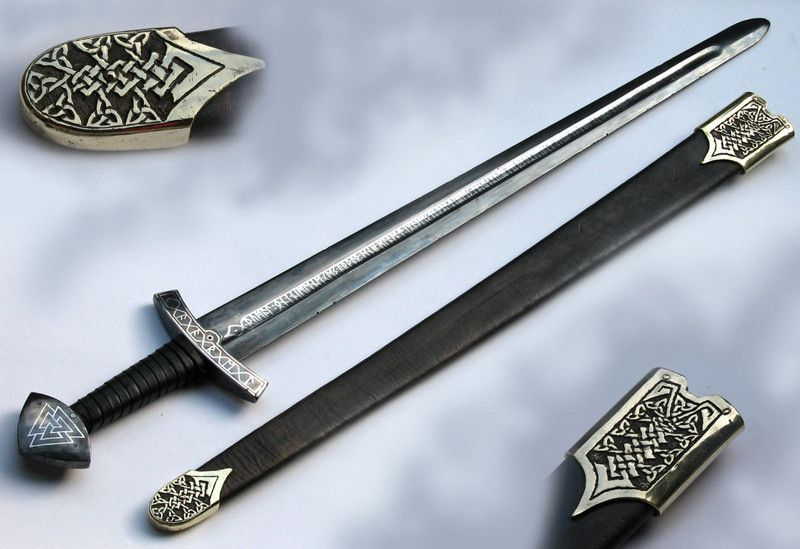
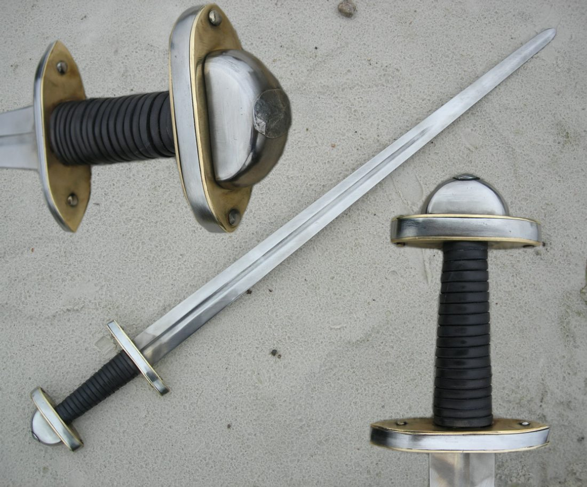
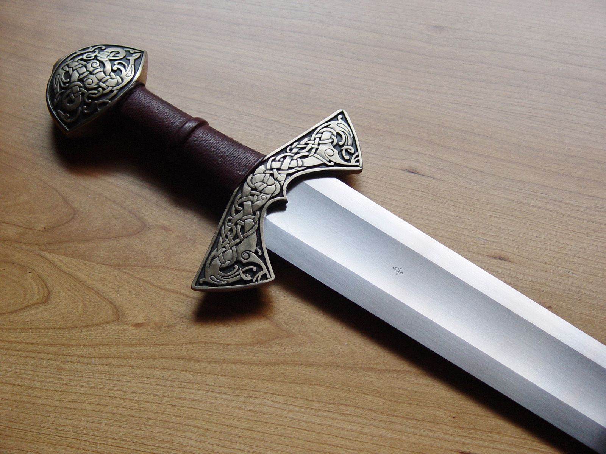
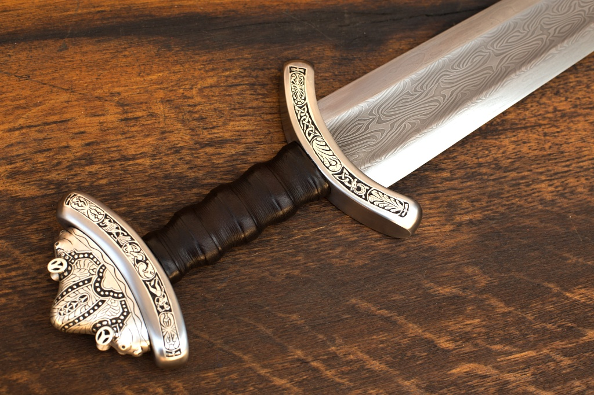
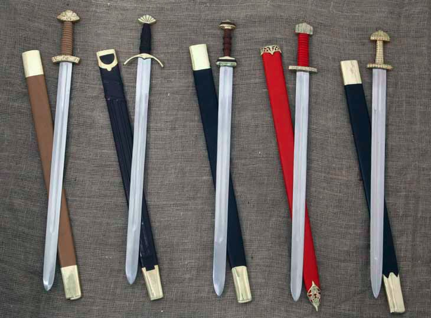
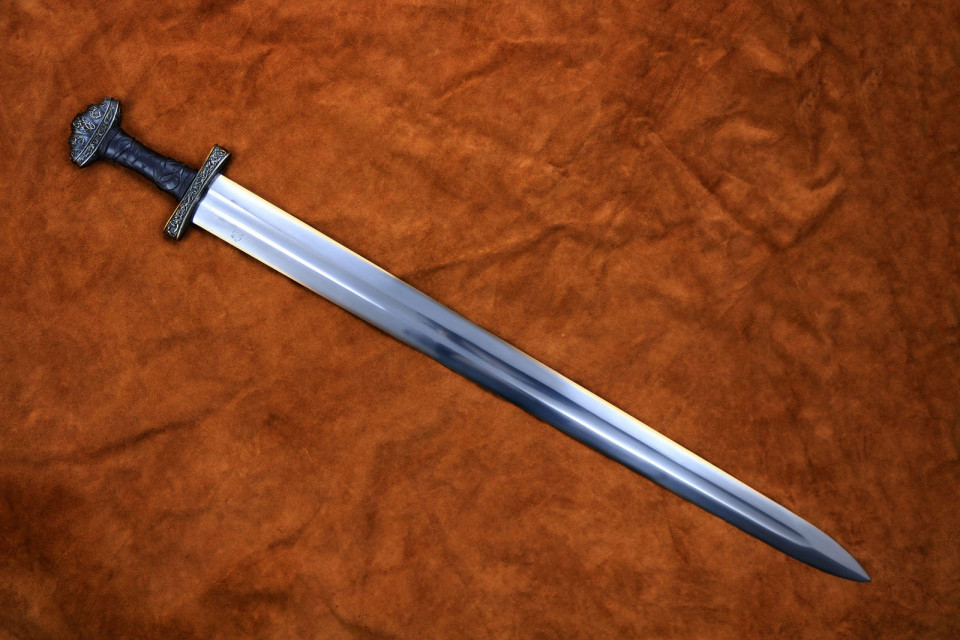
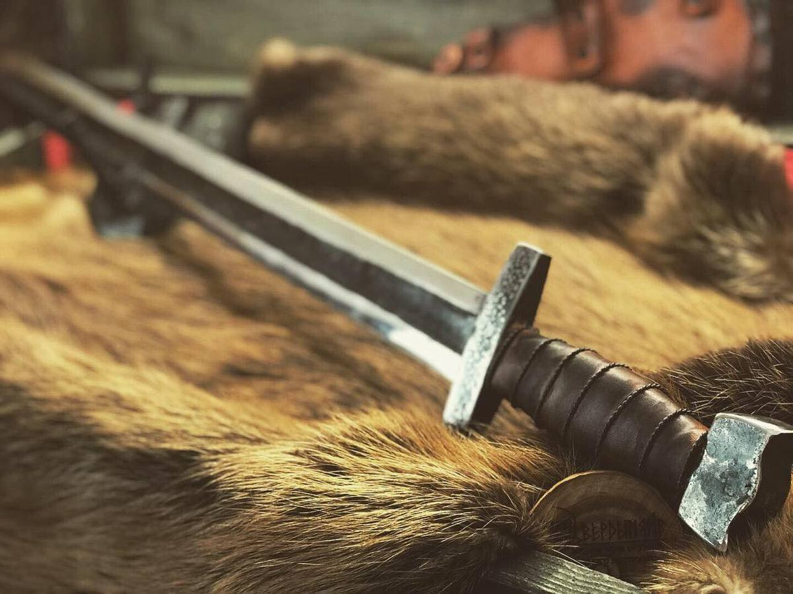

Епоха вікінгів
Епоха вікінгів
 Мечі
Мечі
Мечі були найдорожчим видом зброї. Рукоятки і перехрестя мечів часто оброблялися мідної інкрустацією або срібною черню. На відміну від сокири або Сакса меч був не надто практичною річчю. Серед воїнів існувало повір'я, що кожен меч володіє містичними властивостями. Мечам давали власні імена. На невеликій ділянці Хайтабю, де ведуться розкопки, виявлено близько 40 мечів різної якості. Варязький меч мав двосічний меч довжиною 72-82 см і шириною близько 5 см. Довжина рукоятки 7.5-10 см. З плином часу довжина меча збільшувалася. Руку прикривало короткий перехресті. У міру збільшення довжини клинка збільшувалася маса головки рукоятки, що служила для балансування.
На початку епохи вікінгів кращими вважалися клинки, викувані з декількох зварених смуг стали. Ця складна технологія передбачала зварювання куванням смуг чистого і вуглецевого заліза. В результаті виходив гнучкий і в той же час твердий клинок, в добавок прикрашений малюнком. У деяких клинків був зварений сердечник з ріжучими крайками з твердої сталі. Одне англійське джерело X ст. повідомляє, що ціна меча сягала ціни 15 рабів або 120 биків.
У IX ст. європейський ринок мечів міцно тримали франкскі ковалі. Король Карл Лисий намагався заборонити експорт «стратегічної зброї». Франки з'ясували, що найкращі результати виходять при використанні фосфористої сталі. Виготовлення фосфористої сталі вимагало спеціальних знань, але було швидше колишнього зварювального кування. Скандинавські ковалі, які не володіли цим секретом, імпортували заготовки клинків з Франції, а потім доводили їх до ладу. Франкскі клинки виявлені в Данії, Норвегії, Швеції, Прибалтиці, Англії та Ірландії.
Піхви робилися з дерева, обтягувалися шкірою. Усередині піхви зазвичай мали промаслену підкладку, яка захищала клинок від корозії. Копчик піхов прикривався металевою оковкою. Іноді металевою оковкою посилювали і гирли піхов. Спочатку піхви підвішували на перев'язь через плече, яку пропускали під поясним ременем. Пізніше піхви стали підвішувати безпосередньо до поясного ременя.
Вікінги тримали мечі однією рукою, в іншій тримаючи щит або сакс. Наносячи удар по противнику, намагалися уникати потрапляння по мечу противника. Хоча клинки і відрізнялися якістю, але мірками раннього середньовіччя, при ударі сталь об сталь, клинок міг легко зламатися.
Зброярня:
- 
- 
- 
- 
- 
- 